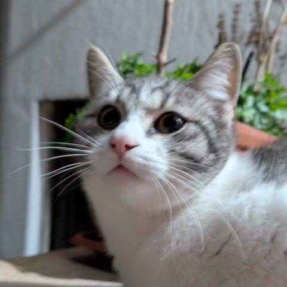

Fabrizio
De Santis
About
I'm a PhD student in Information Technology at the University of Parma. My research has two strands. The first is neuro-symbolic methods for predictive process monitoring, so that predictions comply with business rules and logical constraints and hold up when data is limited. The second is machine learning for predictive analytics in healthcare.
Before the PhD I received my M.S. in Computer Engineering and my B.S. in Computer, Electronic, and Telecommunications Engineering, both from the University of Parma.
Fabrizio De Santis
Experience
- Period
- Nov 2024 – May 2025
- Host
- RWTH Aachen University
Visiting researcher, RWTH Aachen University
Chair of Process and Data Science (PADS), supervised by Wil M.P. van der Aalst
Research
-
Neuro-symbolic predictive process monitoring
Combining neural models with logical knowledge so that predictions about running process instances are both accurate and compliant with business rules.
-
Neuro-symbolic AI for early sepsis diagnosis
Predicting sepsis early from clinical textual notes, using methods that encode medical knowledge alongside learned representations.
Publications
Research assistant

Mario
Chief motivation officer
Contact
I'm open to collaborations and discussions. Email is the best way to reach me.
Parco Area delle Scienze 181/A
Università degli Studi di Parma
I-43124 Parma